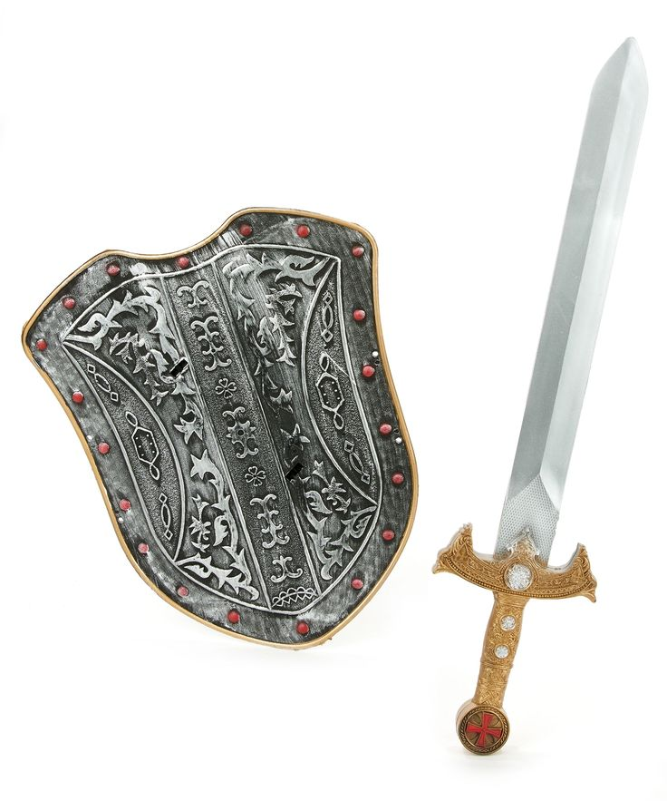

Aquel que controla la guerra
["A quienes buscan el poder de controlar la guerra y causar caos o traer paz, a quienes buscan poder sin importar el costo.
Ellos son a quienes llamo para liberarme"]
["Si quieres el control de la guerra ve a cualquier lugar donde una batalla entre dos facciones tuviera lugar, coloca un objeto de gran valor emocional y quemalo.
Cuando el fuego se consuma di en voz alta: "Deseo encontrar al que controla la guerra" Si todo salio bien seras transportado a un campo de batalla enmedio de un gran prado
rodeado de bosque, por mas peligroso que suene dirigete al centro de la batalla y evita el ir al bosque, pues su gran tamaño terminara por perderte para siempre. Al llegar al
centro de la batalla te encontraras a los dos comandantes de cada faccion peleando a muerte, solo una oracion los sacara de su concentracion en el combate: "Busco a quiene controlan la guerra"
Tras decir esto los dos comandantes detendran su lucha y voltearan a ver y llamaran a un soldado para que te traiga equipo para luchar, tras terminar de equiparte los comandantes te preguntaran:
"Contra quien deseas luchar y que deseas a cambio" puedes responder lo que sea he incluso desafiar a ambos comandantes para obtener ambas recompensas, pero te advierto que no sera facil.
Apenas termines de responder uno o ambos comandantes embestiran contra ti, no es necesario ganar, solo demostrar que eres un soldado digno de sus tropas. Pero en caso de ser derrotado y no ser digno
quedaras atrapado en una lucha sin fin contra cada soldado y persona que llegue a dicho campo de batalla, ya se que triunfes o te ganes su respeto el o los comandantes te ofreceran su espada, escudo o ambos.
Cuando los tomes caeras al piso dormido y al despertar volveras a la realidad, y donde quemaste tu objeto ahora estaran en las cenizas el o los objetos que obtuvieras con el siguiente lema: "Tu que encontraste
a la guerra, eres digno de su control" una espada que siempre cortara a su objetivo, un escudo que siempre protegera a su portador.
Encontraste a la guerra, ahora tu decides si continuarla o ponerle un fin]